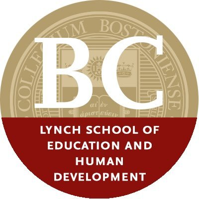

Lynch School of Education and Human Development | ||
|---|---|---|
|  | ||
| Most Popular Major = Applied Psychology & Human Development | 2nd Most Popular Major = Elementary Education | 3rd Most Popular Major = Secondary Education |
Applied Psychology & Human DevelopmentDo you want to enrich the lives of children every day? Do you want to improve the communities, schools, and families around you and throughout the world? Are you looking for a practical major that opens up a variety of options in employment, graduate school, and leadership? If so, then a degree in Applied Psychology and Human Development is your first step. The program prepares students to contribute to society through social and community service, counseling, human development, educational psychology and leadership. The Applied Psychology and Human Development program in the Lynch School of Education and Human Development is a top choice among Boston College undergraduates. That’s because our faculty features leading researchers and our focus is always on application and meaningful learning in the classroom and in the local, national, and international communities. |
Elementary EducationTeaching today’s diverse learners requires a broad knowledge base, complex problem solving, and critical reflection. A degree in Elementary Education from Boston College provides you with the total package of tools, skills, and resources to thrive as an educator. Our program features applied learning in many settings—public, private, parochial, and independent—and include bilingual, alternative, and special needs classrooms. Our practica and methods courses are closely linked so you’re always expanding your knowledge and practice. |
Secondary EducationA degree in Secondary Education from Boston College is distinct. It combines innovative theoretical approaches with firsthand experience working with high school students. Here you’ll learn how to think critically about education, how to teach various disciplines, and how to connect those disciplines to facilitate learning—all while applying your knowledge in local schools and enhancing your experience with elective courses. You’ll round out your degree with a second major in English, history, mathematics, biology, chemistry, physics, earth/environmental science, Spanish, Latin, or French—preparing you to teach in these subject areas. To focus your degree further, you can add a concentration in Special Education. When you graduate, you’ll be prepared to teach children in grades 8–12 in a variety of classrooms covering an array of subjects. |